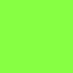

自動下塗り用画像の用意について
①背景透過には以下の色を使用します。

透過したい部分には必ずこの色を置いてください。
②色指示用の画像を作ります。
線画の下に指示色用のレイヤーを作り色をのせます。
③線画+色を乗せたものを透過PNGで統合して書き出します。※サンプル画像ではわかりやすいようにグレーで塗っています。
実際は透明な背景で書き出してください。

アンチエイリアスと二値線画の違いについて
このツールはもともとアニメ動画用に開発していたので、二値を推奨しています。
アンチエイリアスのかかった線画と二値線画で塗り分けの仕上がりが少し変化しますので予めご了承ください！
自分で使っていて感じたのは塗り残しの割合が、結構差があるなあという感じです。
とはいえ、アンチエイリアスがかかった線画でもここまで一括で下塗りができるので少しの修正で済むので時短になると思います！